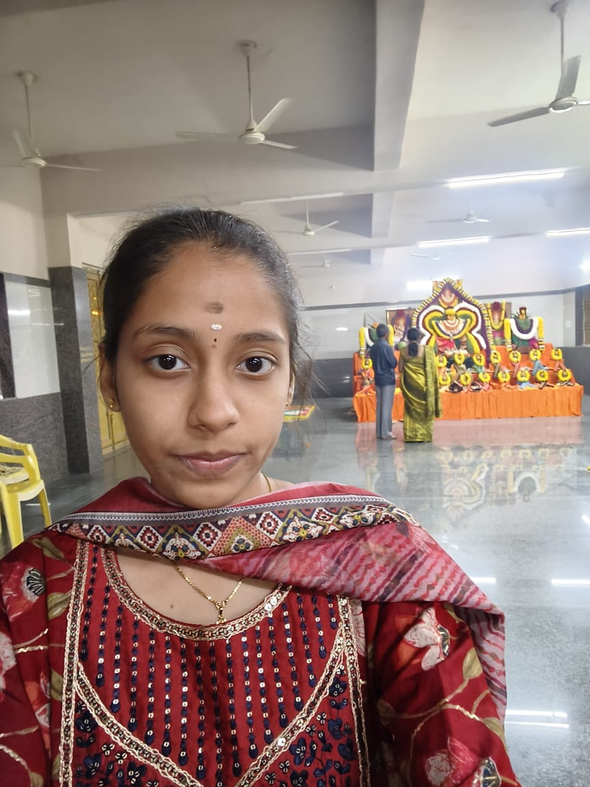

BTech CSE | Java & Python Developer

I am a 3rd-year BTech Computer Science student passionate about problem-solving, software development, and machine learning. I enjoy building real-world projects and continuously improving my skills.
Converts hand gestures into text using sensors and machine learning. Helps people with speech or hearing disabilities.
Tech: Python, Arduino, ML
GitHubAn AI-based system to analyze medical scans and predict possible diseases.
Tech: Python, ML, Image Processing
GitHub
Machine Learning Intern – SkillDzire (AICTE)
Worked on real-world datasets, data preprocessing, and ML model development.
BTech – Computer Science Engineering
G Pulla Reddy Engineering College
2022 – 2026
Email: gskeerthana@email.com
Download Resume